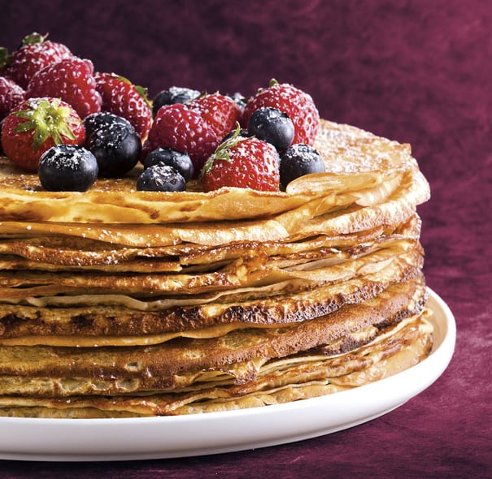

Ülepannikoogid

| Koostisosad |
Kogus |
| Pannkoogid |
Neljale inimesele |
| Muna |
4 |
| Suhkur |
60 g |
| Nisujahu |
200 g |
| Sool |
näpuotsaga |
| Piim |
5 dl |
| Sulatatud võid |
50 g |
Valmistamine
- Klopi munad suhkruga lahti.
- Sega juurde jahu, piim ja näpuotsaga soola.
- Sega ühtlaseks.
- Viimasena lisa juurde sulavõi, sega läbi.
- Kuumuta suur pann, lisa sobiv kogus tainast.
- Küpseta paar minutit keskmisel kuumusel.
- Kui pannkook on altpoolt kaunilt kuldne, keera ringi ning küpseta teiselt poolt.
Originaal retsept